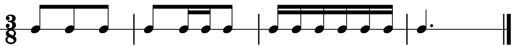
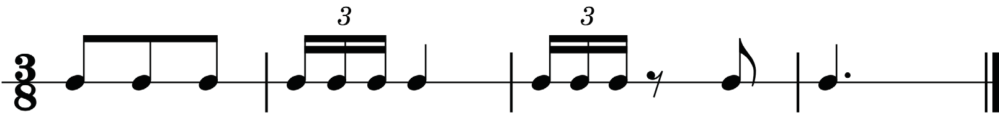
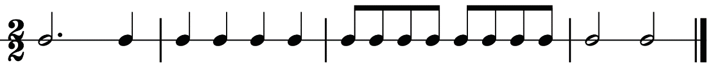
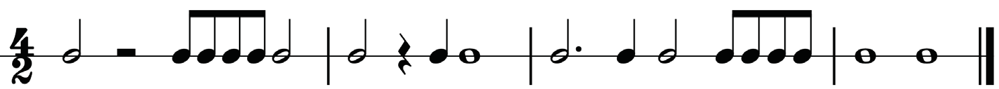
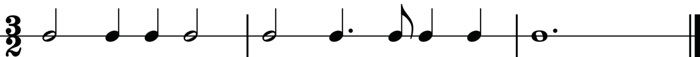
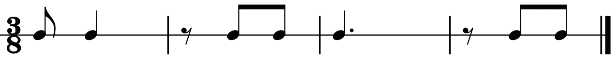

A three-eight time signature
There are three quaver beats in each bar when counting a rhythm in three-eight time. Therefore, you will count from one to three in each bar. Remember that the value of one beat is a quaver. The examples in figures 1.28 and 1.29 show how to count aloud rhythms in three-eight time while clapping the main beats.

One two three
Ta ta ta
Clap clap clap
One two-and three
Ta ta - te ta
Clap clap clap
One-and two-and three-and
Ta - te ta - te ta - te
Clap clap clap
One (two) (three)
Ta - a - a
Clap
Figure 1.28: Counting a rhythm in three-eight time while clapping the main beats

One two three
Ta ta ta
Clap clap clap
One-trip-let two(three)
Ta - ke - ti ta - a
Clap clap
One-trip-let three
Ta - ke - ti ta
Clap clap
One (two) (three)
Ta - a - a
Clap
Figure 1.29: Counting a rhythm in three-eight time while clapping the main beats

Activity 1.3
Count the following rhythms.
(a)

(b)

(c)

(d)
